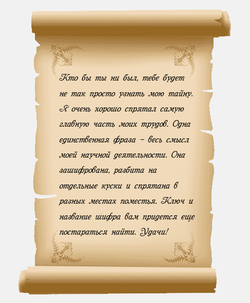
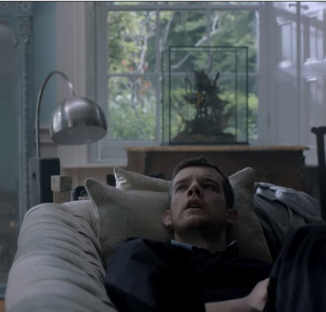
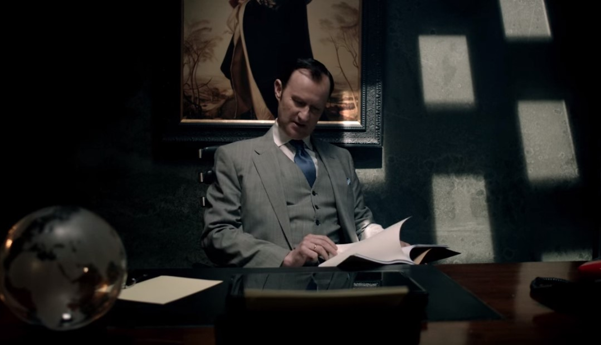
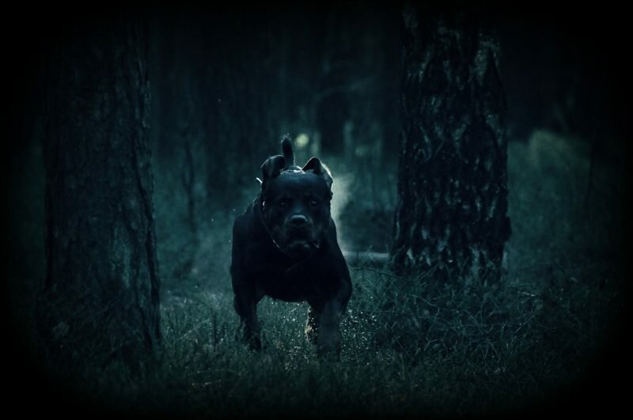
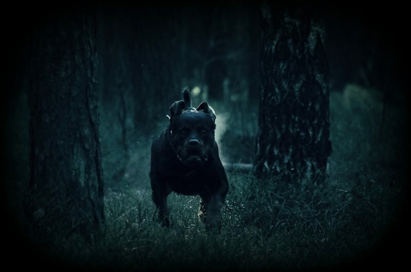
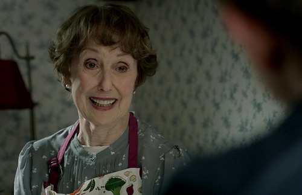

Сэр Генри Баскервиль получил в наследство поместье Баскервиль-Холл в Дартмуре после страшной и загадочной смерти своего дяди – сэра Чарльза Баскервиля. Он был ученым и занимался очень важным делом. Так как сэр Чарльз был очень скрытным и не хотел, чтобы о его исследованиях узнали раньше времени, он все свои труды зашифровал. Генри не знает, чем занимался его дядя, но это было, без сомнения, очень важно, поэтому Генри решает узнать, что было предметом этих исследований.
В кабинете сэра Чарльза в сейфе Генри находит свиток, в котором говорится:
«Сложное это дело», – подумал Генри и пошел обедать. Заглянув в шкаф с бутылками вина, Генри заметил сверток бумаги у задней стенки шкафа. «Что бы это могло быть?». Развернув сверток, Генри обнаружил, что в нем говорится о ключе шифра, которым были зашифрованы труды. Теперь он был больше заинтересован в этом деле. Но Генри не знает, что же это за ключ, ведь чтобы его найти, нужно решить кроссворд. Генри едет к Шерлоку Холмсу, так как он очень хороший сыщик и любит загадки. Шерлок заинтересован странной смертью дяди Генри и тем фактом, что ученый занимался чем-то важным. «А вдруг его убили по этой причине?», – задумывается сыщик. Вместе со своим другом и помощником доктором Ватсоном он берется за это нелегкое задание.
Ключ найден, но что им расшифровывать? Возможно, в кабинете сэра Чарльза есть то, что поможет в дальнейших поисках? Шерлок отправляет Ватсона и Генри в Дартмур, а сам остается в Лондоне, ссылаясь на то, что у него много неотложных дел.
Приехав на станцию на поезде, они пересаживаются в коляску, запряженную парой лошадей, и едут в поместье. Их путь пролегал по холмистым местностям рядом с серым болотом, которое тянулось на несколько миль.
– Сколько же еще ехать? – спросил Ватсон.
– Баскервиль-Холл – это вон тот дом (с двумя узкими башнями), - ответил кучер. – Ехать примерно четверть часа.
Приехав, наконец, в поместье, Ватсон и Генри после хорошего обеда поднялись в кабинет сэра Чарльза. Они до самого вечера просматривали все бумаги и не нашли ничего стоящего.
Генри огляделся и подумал, что в поместье давно не делали ремонт.
– Надо найти людей, которые займутся ремонтом на выходных. А то обои выцвели и кое-где порвались. И надо полы перестелить, скрипят сильно.
– Я где-то видел чертежи дома. Можно посчитать, сколько материалов будет нужно.
– Да, было бы здорово. Думаю, что нужно попросить помощи у миссис Хадсон, она хорошо знает этот дом, да и людей нужных найдет. Но начнем завтра утром.
После завтрака Генри попросил миссис Хадсон посчитать площадь пола на первом этаже, а сам пошел дальше просматривать труды своего дяди. Через пару часов Ватсон заглянул в кабинет и предложил прогуляться по аллее. Генри решил, что это хорошая идея и они после плотного обеда, тепло одевшись, вышли на прогулку. Когда они шли по длинной широкой дорожке, Генри заметил, что вдоль нее поставлены деревянные таблички со странными надписями. Подойдя поближе к одной из них, они увидели следующее:


Достав записную книжку, Ватсон записал их со всех табличек, какие они нашли.
Не понимая, что это значит, Ватсон решил отправить телеграмму Шерлоку Холмсу, чтобы уведомить его о необычной находке.
– Генри, я съезжу на почту, а вы пройдитесь по аллее, вдруг мы что-то еще упустили, - сказал Ватсон.
– Хорошо, доктор, я еще обыщу окружающую аллею местность, чтобы удостовериться, что мы все нашли, – ответил Генри.
После того как Ватсон уехал, Генри обошел всю аллею и вышел к болоту. Близился вечер и солнце клонилось к горизонту, а Ватсон еще не вернулся с почты. Генри решил, что больше он ничего уже не сможет сегодня найти и развернулся в направлении поместья. Вдруг он услышал леденящий кровь вой, доносившийся с болота. Он помнил о старой легенде про огромную собаку черного окраса со светящимися глазами и пастью и считал, что эта собака и убила его дядю. Обезумев от страха, он побежал со всех ног к аллее.
В это время Ватсон подъезжал к поместью и увидел Генри сильно напуганным. Они вошли в дом, Ватсон дал ему успокоительное и отвел в спальню, чтобы тот отдохнул. Генри лежал на кровати, смотрел в потолок и обдумывал произошедшее за день. Он смотрел на царапину на потолке и вспоминал ужасный вой собаки. Вдруг он осознал, что смотрит на какой-то символ, похожий на удлиненную букву «S». Генри внимательно оглядел весь потолок и понял, что он весь в таких царапинах. «Надо сказать об этом доктору Ватсону», - подумал Генри и пошел к нему в комнату.
Оглядев потолок, они решили разобраться, что это значит, и Генри записал все, что увидел и с помощью доктора, узнал, что все это значит.
Все это время Шерлок находился не на Бейкер-стрит, а прятался на болотах и вел следствие скрытно. Перед этим он попросил мальчика, работающего на почте, приносить ему телеграммы от Ватсона. Узнав, что им нужна помощь в разгадке таинственных надписей на табличках, он обратился за помощью к своему старшему брату Майкрофту.
После раскрытия тайны, которые таили в себе таблички с аллеи, Майкрофт решил узнать, какой вклад у него скопился в банке за два года.
Настало утро, и хорошо отоспавшийся Генри вышел из своей комнаты завтракать. Ватсон был рад, что тому стало лучше. Они решили прогуляться по окрестностям и заехать к местному доктору Джеймсу Мортимеру, чтобы обсудить сезонные заболевания гриппом в Дартмуре.
А миссис Хадсон в этот день убиралась в комнатах поместья и заметила несколько странных бумаг сэра Чарльза. Некоторые слова были не узнаваемы, но все же было понятно, что в этих бумагах говорилось о свойствах интеграла. Удивившись, что некоторые строчки были абсолютно не верны, миссис Хадсон решила подправить это недоразумение.
Шерлок Холмс тем временем, разгадав вместе с Майкрофтом загадку табличек, узнал от местных жителей, что Джек Стэмплтон подозрительная личность. Поэтому он отправил телеграмму инспектору Лестрейду, чтобы тот приехал и помог в поимке преступника.

После утомительного дня Генри и Ватсон возвращались в поместье и по дороге встретили брата и сестру Стэмплтон, которые пригласили их вечером на ужин. Они не смогли отказаться от приглашения этих милых людей и согласились прийти.
Переодевшись, Ватсон и Генри пошли к Стэмплтонам, а Шерлок Холмс и инспектор Лестрейд, не выдавая себя, следовали за ними.
Ужин закончился, и Генри вместе с Ватсоном пошли обратно в Баскервиль-Холл через ущелье, весело обсуждая прошедший вечер. В то же время собака почуяла их за 50 метров, завыла и побежала. Перепуганные Генри и Ватсон, услышав вой, побежали прочь из ущелья в сторону домов.
 

– Все позади, мой друг, - промолвил Шерлок. – Собака убита. Призраки старой легенды больше не будут вас пугать.
– Я уж подумал, что мы не успеем, – сказал инспектор. – Казалось, что вы целитесь в собаку целую вечность! А пуля летела еще дольше!
– Ну-ну, инспектор, – возразил Шерлок, – вы же можете посчитать, сколько летела пуля. Это не так уж и долго! Гораздо важнее, что мы знаем, кто убийца!
Когда вся эта большая компания, наконец, добралась до Баскервиль-Холла, некоторым из них пришлось принять успокоительное, так как от только что пережитого было не по себе.
Рано утром пришла телеграмма от Майкрофта. Он хотел узнать, как далеко продвинулся его брат в расследовании и что же значат все эти странные буквы. Шерлок собрал все имеющиеся сведения и уехал в Лондон, чтобы передать их лично в руки.
Чтобы отпраздновать благополучный исход дела, миссис Хадсон решила испечь свои фирменные пирожки с мясом и сказала доктору Ватсону, что ей нужно всего три часа.
Тем временем, Майкрофт быстро расшифровал эту странную фразу, потому что у него имелись очень продвинутые и современные инструменты для расшифровки. Наконец, все узнали, что же скрывал сэр Чарльз Баскервиль.
И вот, преступник найден, тайна сэра Чарльза раскрыта, все справились со своими заданиями, и инспектор Лестрейд отправился в Скотленд-Ярд, чтобы составить подробный отчет о ходе этого занимательного дела.